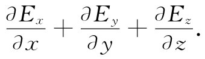

到此我们对矢量分析做个一般性评述挺合适。那些基本证明，可用一些具有普遍形式的优美方程式来表达。但在进行各种计算和分析时，以某种便当方式去选择坐标轴，总是个好主意。这里要注意，刚才在求偶极子的势时，我们曾选取z轴沿着偶极子方向，而不是在某个任意角度上，这使工作容易得多。可是后来我们却又把方程写成矢量形式，以便使其不再依赖于任何一个特定的坐标系。此后，就可以选择我们所要的任何坐标系了，因为已知道该关系式是普遍正确的。对于某一特定问题——假如结果最后能表达成一个矢量方程，当能够选取一个简洁的坐标系时却还去费神用一个在某一复杂角度上的任意坐标系，显然毫无意义。因此，务必利用矢量方程式与任一坐标系无关的这一事实。
另一方面，如果你不是仅对▽·E望一望和仅想知道它是什么（而是正在试图算出一个矢量的散度），那便不要忘记它总是可以展开成下式的：

这时，你若能算出电场的x，y和z各分量并对它们微商，那你就会得到一个散度了。往往似乎有这样一种感觉：若将各分量写出，就会存在某种不太优美的——牵涉到某种失败的——东西；不管怎样，总会有办法用矢量算符去做每件事情。但这种想法往往没有什么好处。当初次碰到一个特殊问题时，诚然，我们熟悉将发生什么，它有助于我们写出分量. 把数字代入方程之内并不见得不优美，而用微商代替某些悦目符号也未必不文雅。实际上，具体写出分量这一件事情就往往是一种智慧。当然，当你在专业杂志上刊登文章时，如果你能把一切东西都写成矢量形式，那将会美观些——而也更易于理解。此外，还节省篇幅。